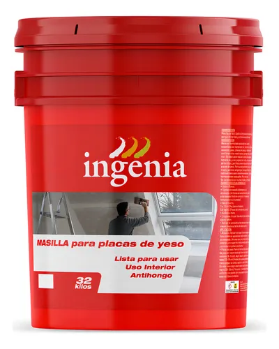

Masilla
Características
- Formato unidad
- Peso de la unidad 32 kg
- Rendimiento 1 m2
- Ambiente interior
- Superficie: placa de yeso
- Tiempo de secado 4h
Descripción
La MASILLA INGENIA es un producto formulado a base de polímeros en emulsión, cargas minerales seleccionadas y aditivos especiales para conformar una pasta blanca de alta viscosidad. USO INTERIOR | Recomendada para el pegado de cintas de papel o tramada, tomado de juntas, recubrimiento de tornillos de sujeción, perfiles, reparar zonas dañadas o irregularidades de placas, terminación final en tabiques y cielorrasos de placa de roca de yeso.
Aplicaciones
- Paredes divisorias
- Cielos rasos
- Revestimientos
- Proyectos residenciales y comerciales